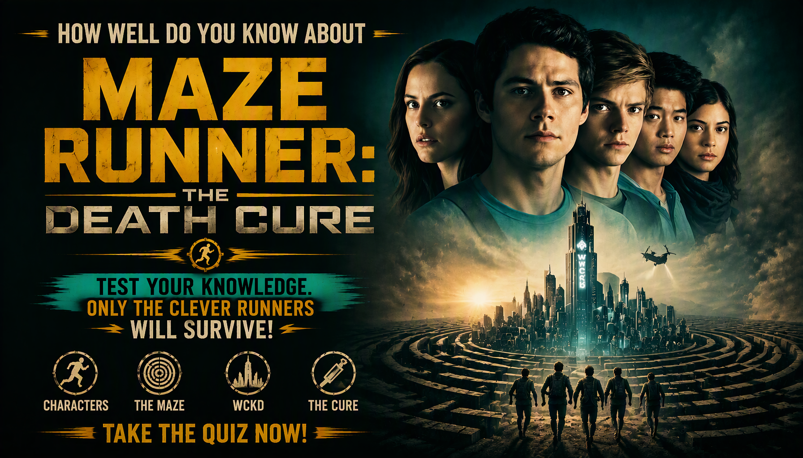
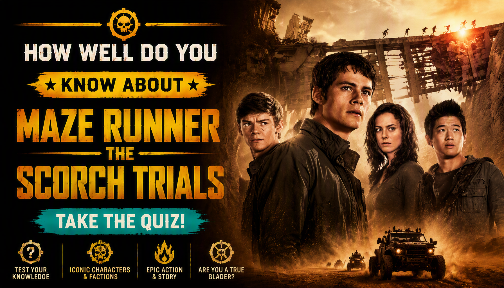
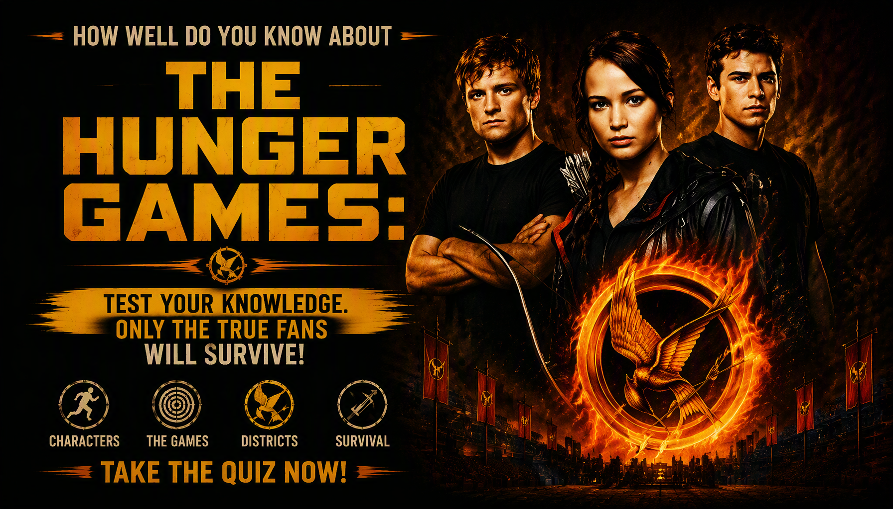

Maze Runner: The Death Cure Quiz
Test your knowledge of Thomas, Newt, Minho, WCKD, the Right Arm, the Last City, the Flare and the Gladers' final mission in Maze Runner: The Death Cure.
Ready? See how much you remember about the Gladers' final fight against WCKD.
This quiz contains spoilers for Maze Runner: The Death Cure.
Suggested Quizzes
Continue the Maze Runner journey or explore another dystopian survival movie.

Maze Runner: The Scorch Trials Quiz Test your knowledge of Thomas, Teresa, the Scorch, WCKD and the Gladers' dangerous journey beyond the Maze. Alice in Borderland Season 1 Quiz
Enter the world of Alice in Borderland
and test your memory of the characters,
games, cards and major events.
Alice in Borderland Season 1 Quiz
Enter the world of Alice in Borderland
and test your memory of the characters,
games, cards and major events.

The Hunger Games Quiz Test your knowledge of Katniss, Peeta, the Games, the Capitol and the fight for survival.Explore More Quizzes
Discover more apocalypse, dystopian, survival, science-fiction and disaster movie quizzes.
🧟 APOCALYPSE QUIZZESABOUT THE MOVIE
Maze Runner: The Death Cure is the 2018 science-fiction action thriller that concludes the Maze Runner film trilogy. The story follows Thomas and the remaining Gladers as they attempt to rescue Minho, who has been captured by WCKD and taken to the Last City.
The film moves the story away from the original Maze and into a heavily fortified city controlled by WCKD. Thomas, Newt and Frypan become involved with the Right Arm resistance while Jorge, Brenda and other allies help them reach the Last City.
The central conflict revolves around WCKD's attempt to develop a treatment for the Flare using the Immunes. Thomas's blood becomes particularly important to the search for a cure, while the rescue of Minho and the survival of the remaining Gladers drive the group's final mission.
The movie combines large-scale action with character-driven moments involving Thomas, Newt, Teresa, Minho and Gally. It also brings back important characters and locations from earlier films while bringing the main story toward its conclusion.
Maze Runner: The Death Cure Details
Release year: 2018
Release date: January 26, 2018
Director: Wes Ball
Genre: Action, adventure, science fiction, suspense and thriller
Runtime: 2 hours 21 minutes
Main setting: The Last City and WCKD-controlled facilities
Main character: Thomas, played by Dylan O'Brien
Major groups: The Gladers, WCKD and the Right Arm
Central threat: The Flare, a virus that has devastated the population
Series connection: The film is the third and final movie in the Maze Runner film trilogy.
What This Quiz Covers
This 20-question quiz focuses specifically on Maze Runner: The Death Cure. The questions test both major story events and smaller details from the movie.
Characters and Relationships
Questions cover Thomas, Newt, Minho, Teresa, Gally, Brenda, Jorge, Janson and other important characters.
WCKD and the Right Arm
The quiz includes details about WCKD, its research, the Immunes and the resistance movement known as the Right Arm.
The Last City
Questions cover the fortified city, WCKD headquarters and locations connected to the Gladers' final mission.
The Flare and the Immunes
The quiz tests knowledge of the Flare, the infected population, the Immunes and WCKD's search for a treatment.
Major Events
Questions also cover the rescue mission, Minho's capture, Newt's infection, Gally's return and the final conflict with WCKD.
Quiz Difficulty
Difficulty: Medium
The quiz combines recognizable characters and major events with questions about specific locations, relationships, WCKD operations and smaller story details. Remembering more than just the movie's biggest action scenes will help you score well.
How the Maze Runner: The Death Cure Movie Quiz Works
The quiz contains 20 questions. Each question has four possible choices, but only one answer is correct.
Each correct answer gives you 1 point and an incorrect answer gives you 0 points. Your 20-question score is converted into a final percentage.
At the end of the quiz, you will see your correct answers, incorrect answers, total questions and accuracy percentage, along with your movie knowledge result.
Quiz Navigation
Starting the Quiz
Select START QUIZ on the opening screen to begin. The first question will appear with four possible answers.
Selecting an Answer
Read the question and all four choices before selecting your answer. Choose the option you believe is correct before continuing.
Next and Back
Use Next to move forward through the quiz. The Back button allows you to return to an earlier question and review or change your selected answer.
Finishing the Quiz
Answer all 20 questions and submit the quiz when prompted. Your final score and result breakdown will then be displayed.
Try Again and Challenge Friends
Select TRY AGAIN to replay the quiz. You can also use SHARE MY RESULT or CHALLENGE YOUR FRIENDS after completing the quiz.
Maze Runner: The Death Cure Movie Quiz FAQ
How many questions are in the quiz?
There are 20 questions, and every question has four possible choices.
What is the maximum score?
The maximum result is 100%. Each of the 20 questions is worth 1 point before the score is converted into a percentage.
What topics are covered?
The quiz covers characters, WCKD, the Right Arm, the Last City, the Flare, the Immunes, major events and other story details from Maze Runner: The Death Cure.
Is this quiz only about the characters?
No. Character questions are only one part of the quiz. Other questions focus on locations, groups, events, the Flare, WCKD and the search for a cure.
Which movie does this quiz cover?
This quiz covers the 2018 film Maze Runner: The Death Cure, directed by Wes Ball and starring Dylan O'Brien as Thomas.
Do I need to watch the movie first?
It is recommended. The questions are based on characters, events and details from the movie, including information that may be difficult to answer without having watched it.
What does my score mean?
Your percentage represents the proportion of questions you answered correctly. A higher percentage means you remembered more of the movie's tested details.
Can I take the quiz again?
Yes. Select TRY AGAIN after completing the quiz to start another attempt.
Can I challenge my friends?
Yes. Select CHALLENGE YOUR FRIENDS after completing the quiz to share the challenge.
Is the quiz spoiler-free?
No. The quiz contains questions about important characters, events and story developments from the movie.
Spoiler Warning
This page and quiz contain spoilers for Maze Runner: The Death Cure. The information includes details about Minho's capture, Newt's infection, WCKD, the Right Arm, the Last City, the Flare and the movie's ending.
If you have not watched Maze Runner: The Death Cure, consider watching the movie before reading the detailed sections or taking the quiz.